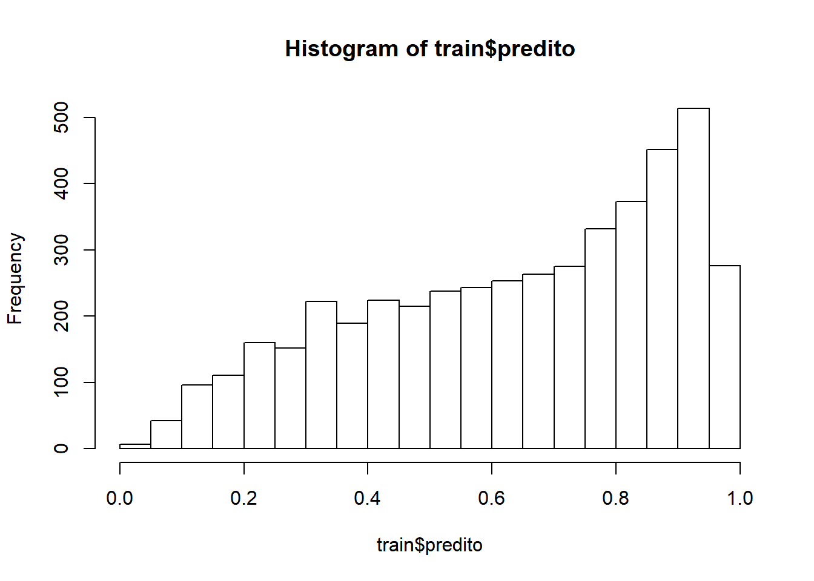
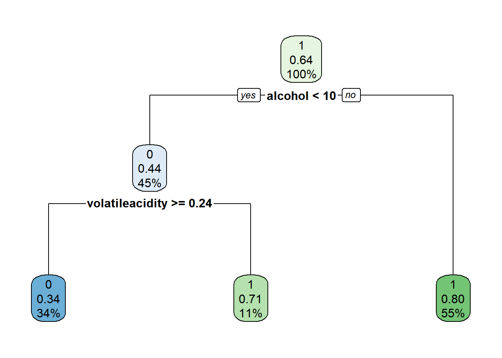

Vamos tratar a base de dados para tentar descobrir se um vinho é Bom ou Ruim através de suas características físico químicas. Consideramos que vinhos com nota >=6 são de boa qualidade (Bom) e as outras notas com qualidade Ruim. Criaremos uma nova variável (newQuality), que possui valor= 1 quando o vinho é Bom e 0 Se for ruim
library(readr)
`BaseWine_Red_e_White(1)` <- read_delim("BaseWine_Red_e_White.csv",
";", escape_double = FALSE, col_types = cols(Vinho = col_factor(levels = c("WHITE",
"RED"))), locale = locale(date_names = "pt",
decimal_mark = ",", grouping_mark = "."),
trim_ws = TRUE)
BaseQuality <- `BaseWine_Red_e_White(1)`
BaseQuality$newQuality <- ifelse(BaseQuality$quality >=6, 1, 0)
drops <- c("id_vinho", "Vinho", "quality")
BaseQuality <- BaseQuality[ , !(names(BaseQuality) %in% drops)]
#head(BaseQuality)Vamos separar a base de dados em duas: Base de treino e de teste
smp_size <- floor(0.75 * nrow(BaseQuality))
set.seed(1)
trainind <- sample(seq_len(nrow(BaseQuality)), size = smp_size)
train <- BaseQuality[trainind, ]
test <- BaseQuality[-trainind, ]Vamos criar agora um modelo de regressão logística atráves da função glm
modeloQuality <- glm(newQuality ~ fixedacidity + volatileacidity+ citricacid+ residualsugar+ chlorides+freesulfurdioxide+totalsulfurdioxide+density+ pH+ sulphates+ alcohol, train, family=binomial(link=logit))
summary(modeloQuality)##
## Call:
## glm(formula = newQuality ~ fixedacidity + volatileacidity + citricacid +
## residualsugar + chlorides + freesulfurdioxide + totalsulfurdioxide +
## density + pH + sulphates + alcohol, family = binomial(link = logit),
## data = train)
##
## Deviance Residuals:
## Min 1Q Median 3Q Max
## -3.3525 -0.9021 0.4439 0.7953 4.1030
##
## Coefficients:
## Estimate Std. Error z value Pr(>|z|)
## (Intercept) 1.493e+02 4.815e+01 3.101 0.001927 **
## fixedacidity 1.801e-01 6.030e-02 2.987 0.002819 **
## volatileacidity -4.161e+00 3.183e-01 -13.072 < 2e-16 ***
## citricacid -5.299e-01 2.926e-01 -1.811 0.070116 .
## residualsugar 1.204e-01 1.989e-02 6.056 1.4e-09 ***
## chlorides -1.987e+00 1.151e+00 -1.726 0.084350 .
## freesulfurdioxide 2.033e-02 2.967e-03 6.854 7.2e-12 ***
## totalsulfurdioxide -8.585e-03 1.042e-03 -8.240 < 2e-16 ***
## density -1.619e+02 4.909e+01 -3.299 0.000971 ***
## pH 1.172e+00 3.481e-01 3.367 0.000760 ***
## sulphates 2.681e+00 3.127e-01 8.575 < 2e-16 ***
## alcohol 7.058e-01 7.003e-02 10.077 < 2e-16 ***
## ---
## Signif. codes: 0 '***' 0.001 '**' 0.01 '*' 0.05 '.' 0.1 ' ' 1
##
## (Dispersion parameter for binomial family taken to be 1)
##
## Null deviance: 6405.1 on 4871 degrees of freedom
## Residual deviance: 5027.2 on 4860 degrees of freedom
## AIC: 5051.2
##
## Number of Fisher Scoring iterations: 4Aplicando os valores preditos na amostra. Temos um resumo da variável de predição e o histograma da distribuição
train$predito <- fitted(modeloQuality)
summary(train$predito)## Min. 1st Qu. Median Mean 3rd Qu. Max.
## 0.000221 0.441535 0.676640 0.633005 0.848348 0.996374hist(train$predito)
Frequências Absolutas da variável predita
train$fx_predito1 <- cut(train$predito, breaks=c(0,0.10,0.20,0.30,0.40,0.50,0.60,0.70,0.80,0.90,1), right=F)
table(train$fx_predito1,train$newQuality)##
## 0 1
## [0,0.1) 47 11
## [0.1,0.2) 189 34
## [0.2,0.3) 231 86
## [0.3,0.4) 286 151
## [0.4,0.5) 245 212
## [0.5,0.6) 282 238
## [0.6,0.7) 187 379
## [0.7,0.8) 157 504
## [0.8,0.9) 129 746
## [0.9,1) 35 723Frequências relativas
print(prop.table(table(train$fx_predito1,train$newQuality),2), digits=2)##
## 0 1
## [0,0.1) 0.0263 0.0036
## [0.1,0.2) 0.1057 0.0110
## [0.2,0.3) 0.1292 0.0279
## [0.3,0.4) 0.1600 0.0490
## [0.4,0.5) 0.1370 0.0687
## [0.5,0.6) 0.1577 0.0772
## [0.6,0.7) 0.1046 0.1229
## [0.7,0.8) 0.0878 0.1634
## [0.8,0.9) 0.0721 0.2419
## [0.9,1) 0.0196 0.2344plot(train$fx_predito1 , train$newQuality)Vamos montar a matriz de confusão. Para o corteurte, vamos escolher o 0,5
train$fx_predito <- cut(train$predito, breaks=c(0,0.50,1), right=F)
MC_log_treino <- table(train$newQuality, train$fx_predito , deparse.level = 2)
show(MC_log_treino)## train$fx_predito
## train$newQuality [0,0.5) [0.5,1)
## 0 998 790
## 1 494 2590ACC_log = sum(diag(MC_log_treino))/sum(MC_log_treino)*100
show(ACC_log) ## [1] 73.64532O Modelo teve uma acurácia de 73%, que pode ser um bom resultado dependendo do nível de confiança adotado.
Vamos agora aplicar o modelo na amostra de teste.
predito_log_teste <- predict(modeloQuality,test,type = "response")
summary(predito_log_teste) ## Min. 1st Qu. Median Mean 3rd Qu. Max.
## 0.001821 0.427668 0.676671 0.632927 0.856280 0.991117Em seguida vamos plotar a distribuição da variável predita
hist(predito_log_teste) Matriz de Confusão para a variável predita
test$Qual <- cut(predito_log_teste , breaks=c(0,0.50,1), right=F)
MC_test_log <- table(test$newQuality, test$Qual , deparse.level = 2)
show(MC_test_log)## test$Qual
## test$newQuality [0,0.5) [0.5,1)
## 0 331 265
## 1 175 854Vamos calcular a acurácia do modelo na amostra teste.
ACC_test_log = sum(diag(MC_test_log))/sum(MC_test_log)*100
show(ACC_test_log) ## [1] 72.92308Percebemos que o valor observado é próximo à amostra de teste. Podemos dizer que modelo não teve overfit aparente em relação aos dados treino.
plot(test$Qual , test$newQuality)Percebemos que o modelo é muito bom para identificar vinhos Bons utilizando a amostra de teste. Entretanto, para identificar vinhos de qualidade inferior, o modelo não é tão preciso
print(prop.table(table(test$Qual ,test$newQuality),2),digits=2)##
## 0 1
## [0,0.5) 0.56 0.17
## [0.5,1) 0.44 0.83Vamos Limpar a memória do R e importar novamente as informações de Vinhos
library(readr)
`BaseWine_Red_e_White(1)` <- read_delim("BaseWine_Red_e_White.csv",
";", escape_double = FALSE, col_types = cols(Vinho = col_factor(levels = c("WHITE",
"RED"))), locale = locale(date_names = "pt",
decimal_mark = ",", grouping_mark = "."),
trim_ws = TRUE)
BaseQuality <- `BaseWine_Red_e_White(1)`
BaseQuality$newQuality <- ifelse(BaseQuality$quality >=6, 1, 0)
BaseQuality$newQuality <- factor(BaseQuality$newQuality)
drops <- c("id_vinho", "Vinho", "quality")
BaseQuality <- BaseQuality[ , !(names(BaseQuality) %in% drops)]
head(BaseQuality)## # A tibble: 6 x 12
## fixedacidity volatileacidity citricacid residualsugar chlorides
## <dbl> <dbl> <dbl> <dbl> <dbl>
## 1 6.6 0.24 0.35 7.7 0.031
## 2 6.7 0.34 0.43 1.6 0.041
## 3 10.6 0.31 0.49 2.2 0.063
## 4 5.4 0.18 0.24 4.8 0.041
## 5 6.7 0.3 0.44 18.8 0.057
## 6 6.8 0.5 0.11 1.5 0.075
## # ... with 7 more variables: freesulfurdioxide <dbl>, totalsulfurdioxide <dbl>,
## # density <dbl>, pH <dbl>, sulphates <dbl>, alcohol <dbl>, newQuality <fct>Vamos separar a base de treino e de teste
smp_size <- floor(0.75 * nrow(BaseQuality))
set.seed(1)
trainind <- sample(seq_len(nrow(BaseQuality)), size = smp_size)
train <- BaseQuality[trainind, ]
test <- BaseQuality[-trainind, ]Em seguida vamos criar um modelo de árvore de decisão a partir da amostra de teste. A árvore sugerida pelo modelo é a seguinte:
O modelo sugere um alto peso para o teor alcoolico e em segundo nível para a acidez volátil
modelo_tree_1 <- rpart (newQuality ~ fixedacidity + volatileacidity+ citricacid+ residualsugar+ chlorides+freesulfurdioxide+totalsulfurdioxide+density+ pH+ sulphates+ alcohol, data = train, control = rpart.control(cp = 0.05))
rpart.plot(modelo_tree_1)
Vamos ver o resumo da execução do modelo:
summary(modelo_tree_1)## Call:
## rpart(formula = newQuality ~ fixedacidity + volatileacidity +
## citricacid + residualsugar + chlorides + freesulfurdioxide +
## totalsulfurdioxide + density + pH + sulphates + alcohol,
## data = train, control = rpart.control(cp = 0.05))
## n= 4872
##
## CP nsplit rel error xerror xstd
## 1 0.1423378 0 1.0000000 1.0000000 0.01881567
## 2 0.0500000 2 0.7153244 0.7438479 0.01739118
##
## Variable importance
## alcohol density volatileacidity chlorides
## 33 18 14 12
## residualsugar totalsulfurdioxide freesulfurdioxide pH
## 9 8 5 1
## sulphates
## 1
##
## Node number 1: 4872 observations, complexity param=0.1423378
## predicted class=1 expected loss=0.3669951 P(node) =1
## class counts: 1788 3084
## probabilities: 0.367 0.633
## left son=2 (2482 obs) right son=3 (2390 obs)
## Primary splits:
## alcohol < 10.35 to the left, improve=299.66350, (0 missing)
## density < 0.99285 to the right, improve=175.11580, (0 missing)
## volatileacidity < 0.535 to the right, improve=111.88950, (0 missing)
## chlorides < 0.0455 to the right, improve=109.99970, (0 missing)
## citricacid < 0.235 to the left, improve= 92.82374, (0 missing)
## Surrogate splits:
## density < 0.99409 to the right, agree=0.762, adj=0.514, (0 split)
## chlorides < 0.0415 to the right, agree=0.684, adj=0.356, (0 split)
## totalsulfurdioxide < 140.5 to the right, agree=0.633, adj=0.252, (0 split)
## residualsugar < 7.075 to the right, agree=0.632, adj=0.249, (0 split)
## freesulfurdioxide < 43.75 to the right, agree=0.578, adj=0.140, (0 split)
##
## Node number 2: 2482 observations, complexity param=0.1423378
## predicted class=0 expected loss=0.4609186 P(node) =0.5094417
## class counts: 1338 1144
## probabilities: 0.539 0.461
## left son=4 (1629 obs) right son=5 (853 obs)
## Primary splits:
## volatileacidity < 0.2525 to the right, improve=130.10210, (0 missing)
## citricacid < 0.235 to the left, improve= 44.21768, (0 missing)
## chlorides < 0.0635 to the right, improve= 32.65191, (0 missing)
## residualsugar < 8.975 to the left, improve= 23.49456, (0 missing)
## alcohol < 9.85 to the left, improve= 20.36710, (0 missing)
## Surrogate splits:
## pH < 3.005 to the right, agree=0.676, adj=0.057, (0 split)
## residualsugar < 13.675 to the left, agree=0.675, adj=0.055, (0 split)
## density < 0.99423 to the right, agree=0.672, adj=0.046, (0 split)
## sulphates < 0.375 to the right, agree=0.670, adj=0.040, (0 split)
## fixedacidity < 5.75 to the right, agree=0.662, adj=0.018, (0 split)
##
## Node number 3: 2390 observations
## predicted class=1 expected loss=0.1882845 P(node) =0.4905583
## class counts: 450 1940
## probabilities: 0.188 0.812
##
## Node number 4: 1629 observations
## predicted class=0 expected loss=0.3437692 P(node) =0.3343596
## class counts: 1069 560
## probabilities: 0.656 0.344
##
## Node number 5: 853 observations
## predicted class=1 expected loss=0.3153576 P(node) =0.1750821
## class counts: 269 584
## probabilities: 0.315 0.685Vamos aplicar a árvore de decisão na amostra de teste Em seguida exibiremos a matriz de confusão
predTree <-predict(modelo_tree_1,test,type='class')
MCpredTree<-table(test$newQuality, predTree)
MCpredTree## predTree
## 0 1
## 0 357 239
## 1 189 840Em seguida vamos calcular a acurácia do modelo de árvore de decisão. Podemos ver que o resultado(73,66%) é muito próximo ao obtido no modelo de regressão logística (72,92%)
diagonal <- diag(MCpredTree)
Acc_tree_teste <- sum(diagonal)/sum(MCpredTree)
print(Acc_tree_teste*100, digits=5)## [1] 73.662Vamos calcular a matriz de confusão relativa.
print(prop.table(table(predTree,test$newQuality),2),digits=2)##
## predTree 0 1
## 0 0.60 0.18
## 1 0.40 0.82Assim como o modelo de regressão logística, a acurácia é muito maior para identificar vinhos Bons. Entretanto, o modelo de árvore de decisão apresentado consegue prever melhor (60%) os casos em que os vinhos não são de boa qualidade no outro modelo (56%)